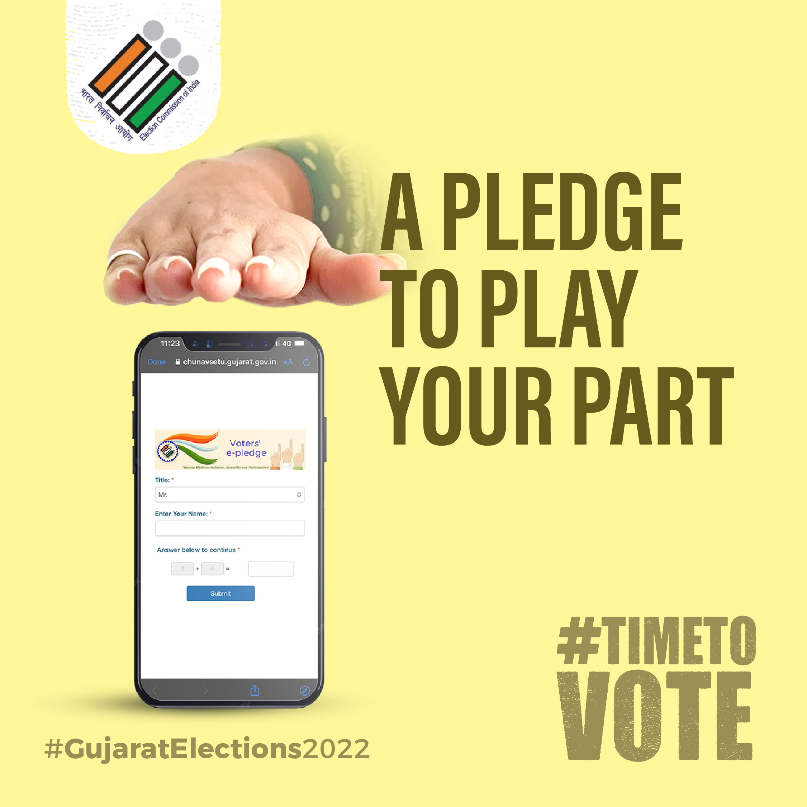
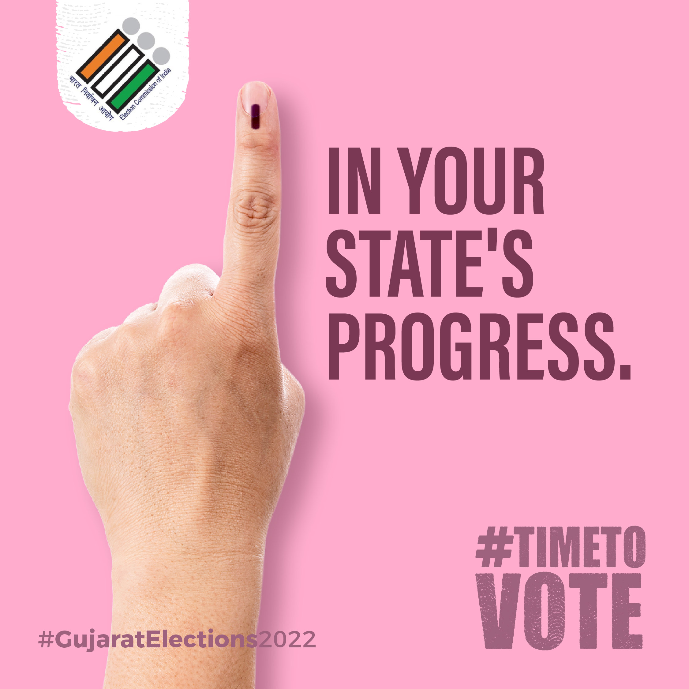
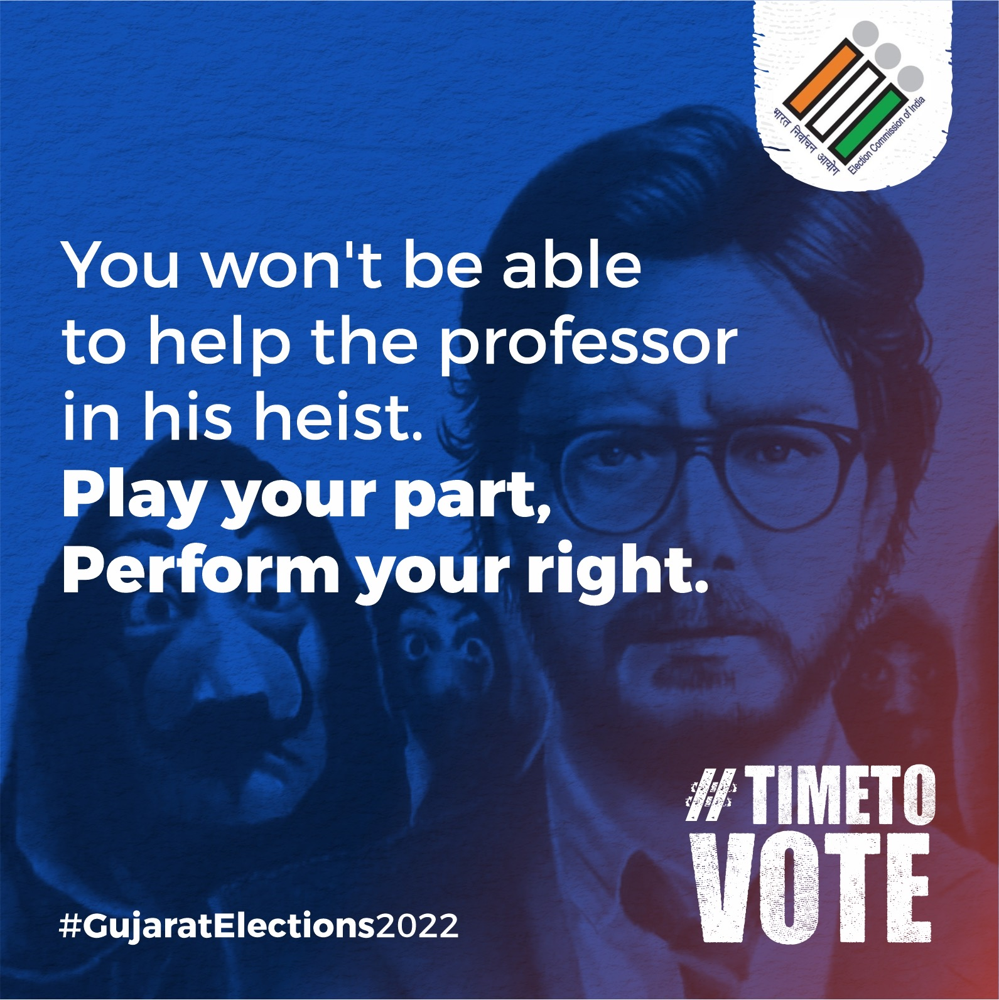
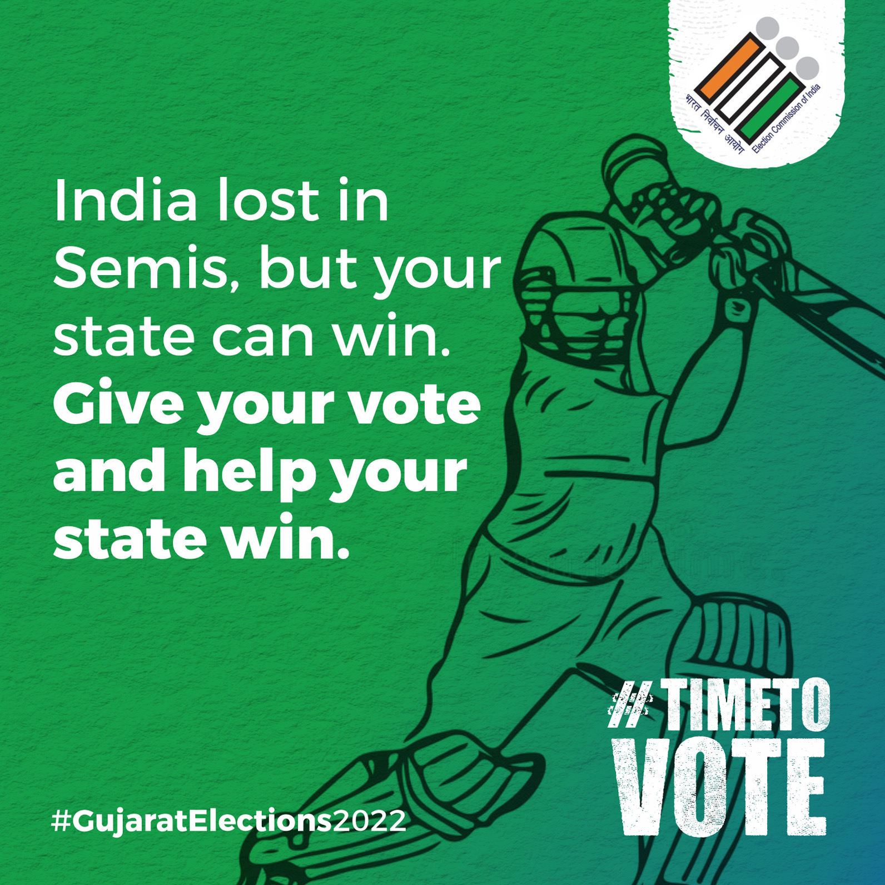
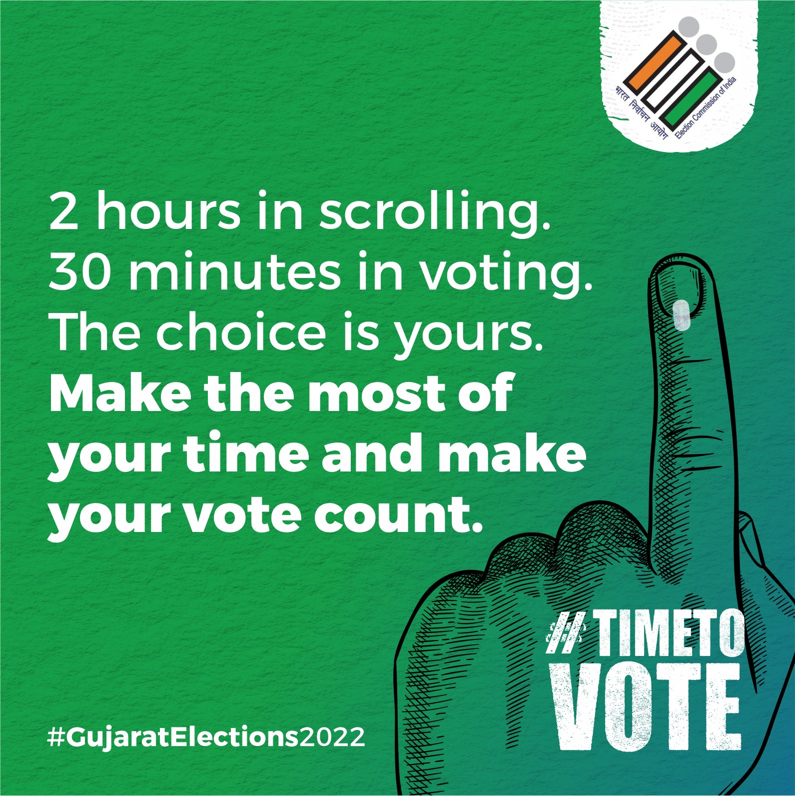

Create a social media campaign for the 2022 Gujarat state elections. Target first-time voters. Keep the language simple. Use whatever is trending.
They Scrolled.
They Binged.
They Ignored.
We Made Them Vote.
A campaign built on one truth. Young voters don't respond to duty. They respond to culture. So we went where they were and said what they understood.
Brief
The Strategy
01 Basic English. Big impact.
Short sentences. Everyday words. If someone had to read it twice, we rewrote it.
02 Trending is the brief.
Cricket. Chess. Heists. Scrolling. Whatever people were already talking about became our way in.
03 Identity over obligation.
We never said vote because you should. We said vote because it's yours. The real GOAT isn't on a pitch. They're in a queue.
04 One ask. Six doors.
Six creatives. Six emotions. One message. Go vote.
India lost in semis.
But your state can win.
Give your vote.
Help your state win.
But your state can win.
Give your vote.
Help your state win.
The Creatives
The Real GOAT. Messi. Ronaldo. Chess. One finger wins it all.
Play your part. Can't help the Professor in his heist. But you can perform your right.
2 hours in scrolling. 30 minutes in voting. The choice is yours.
In your state's progress. One ink mark. One vote.
A pledge to play your part. Start before the booth.
The Result
+22% more first-time voters than the election before.
5 lakh impressions. The message reached. The finger moved.
70,000 likes. Real people. Real votes.
What Worked
Trending is the brief. Messi vs Ronaldo. Money Heist. The T20 heartbreak. Every post borrowed emotion from something people already cared about. Then pointed it straight at the booth.
Simple is the strategy. Basic English was never a limitation. It was the whole plan. Short copy gets shared. Shared copy gets people to vote.
2 hours in scrolling. 30 minutes in voting. No persuasion. Just contrast. People did the math themselves.
The Creatives




